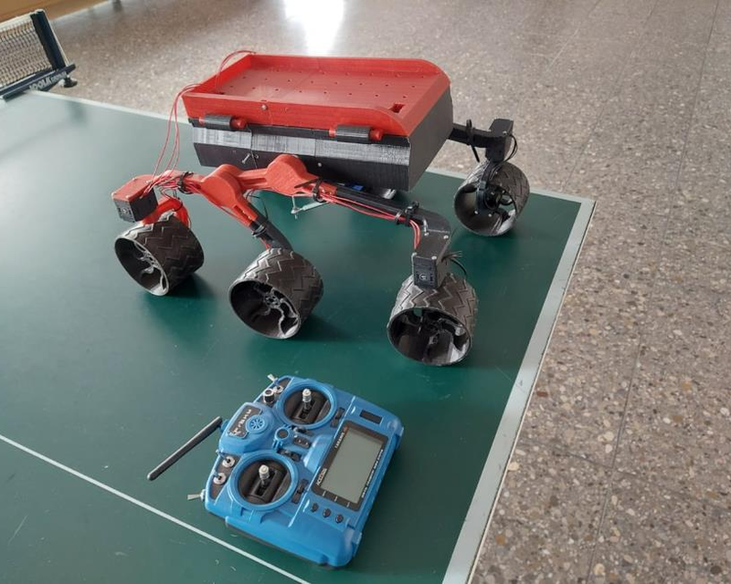
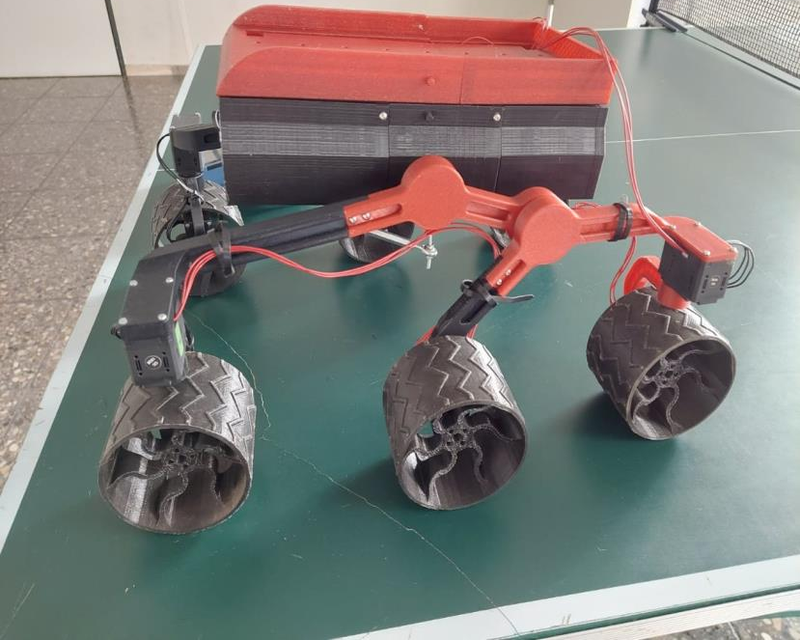
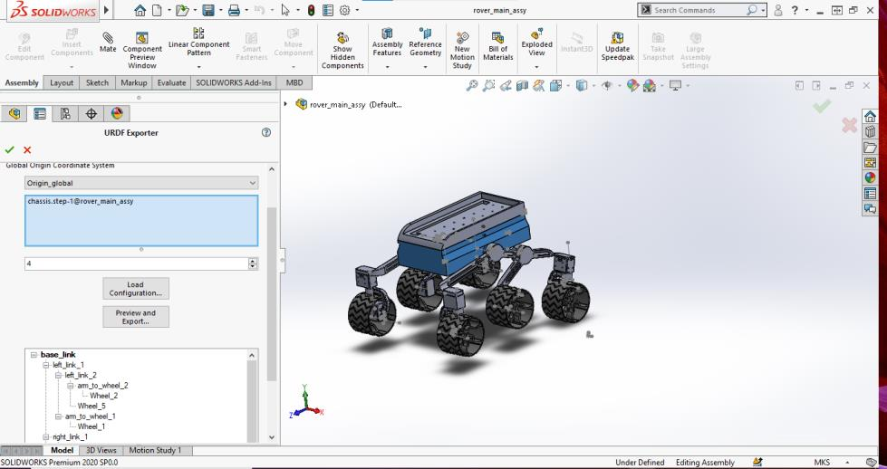
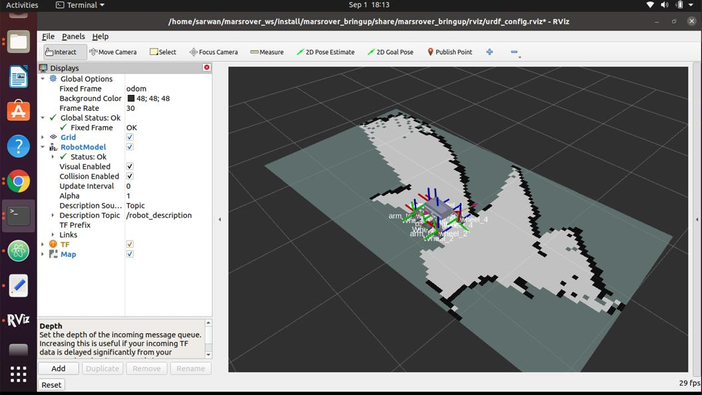

Recorded in RViz. Teleop commands go through the Ackermann controller node. The odometry node moves the model
in the odom frame, and the steering joints follow the controller output.
| Controller board | OpenCR 1.0 |
| Servos | 10 × Dynamixel XL430 (4 in position mode, 6 in velocity mode) |
| Onboard computer | Jetson AGX Xavier |
| Depth camera | Intel RealSense D435 |
| Tracking camera | Intel RealSense T265 |
| Battery | 5800 mAh LiPo |
| Remote control | Taranis X9 Lite |
| Languages | C++, Python |
| Libraries | Dynamixel2Arduino |
| Mapping | SLAM Toolbox, RTAB-Map |
I took over a 3D-printed, six-wheel rover modelled on NASA's Mars rovers. An earlier student group had designed it. Over two university R&D modules in 2021, I assembled it, made it drive and wrote its control system twice.


Ackermann steering solves the difference of angles between steering wheels during vehicle turning. This difference is caused by the fact that each wheel follows a different radius, so that the inside wheel has to be tilted a little more than the outside wheel. This principle radically reduces tire slippage (that is important especially at higher speeds). The Ackerman concept is to have all wheels rolling around a common point called Instantaneous center (ICC) during a turn. This can greatly improve cornering ability and performance. The correct angles are dependent on the wheelbase of the vehicle and the angle of turn.
The whole controller comes down to three lines. The driver's remote controller gives a virtual steering angle δ for an imaginary wheel in the middle of the front axle:
The first line places the ICR. The second gives each steered wheel the angle that points it around the ICR, so the inner wheel always steers more. The third is a software differential. The whole rover turns at one angular velocity ω, so wheels on the outside of the curve must roll faster than wheels on the inside.
The interrupt timestamps every pulse with micros(). The gap between two pulses is one channel value, about 1000–2000 µs.
A gap longer than 3000 µs can only be the sync pause, so the decoder restarts at channel 1.
// Stores the pulse position timers void my_ISR() { byte state_now = digitalRead(my_pin); if (state_now == my_state) { timers[pulse] = micros(); if (pulse > 0) { getChannelValue(pulse); } else pulse++; } } // Calculates the channel values void getChannelValue(byte pointer) { channels[pointer -1] = timers[pointer] - timers[pointer -1]; if (channels[pointer -1] > 3000) { // sync gap: new frame timers[0] = timers[pointer]; pulse = 1; } else pulse++; }
From PPM.cpp, a small library I wrote as a .hpp/.cpp pair.
The three formulas above, as they run on the board. The RC output is mapped to 0–30° of virtual steering, and the result maps onto the servo's absolute angle.
VirtualSteeringAngle = map(CH_2,1485,1000,0,30); degreeToRad = VirtualSteeringAngle*(3.14/180); CoR = 0.2/tan(degreeToRad); // instantaneous centre InnerAngle = (atan(0.2/(CoR-(0.3085/2))))*(180/3.14); OuterAngle = (atan(0.2/(CoR+(0.3085/2))))*(180/3.14); // Mapping angle to abs angle of servos (front and rear steer opposite ways) ServoAngleInnerFront = map(InnerAngle,0,45,180,135); ServoAngleOuterFront = map(OuterAngle,0,45,180,135); ServoAngleInnerRear = map(InnerAngle,0,45,180,225); ServoAngleOuterRear = map(OuterAngle,0,45,180,225); dxl.setGoalPosition(1,ServoAngleInnerFront,UNIT_DEGREE); dxl.setGoalPosition(3,ServoAngleInnerRear,UNIT_DEGREE); dxl.setGoalPosition(4,ServoAngleOuterRear,UNIT_DEGREE); dxl.setGoalPosition(2,ServoAngleOuterFront,UNIT_DEGREE);
From LeftTurn() in Rover.ino. RightTurn() mirrors it.
In phase 2 the rover gets an onboard computer (Jetson AGX Xavier) and depth cameras, and the control moves into ROS 2.
The key change is the input. Instead of a RC angle, the controller accepts a standard
geometry_msgs/Twist (forward speed v, turn rate ω). A Nav2 navigation stack sends the same message, so
the controller is ready for autonomous driving later.
ω · √((R ± T)² + L²).theta_front_closest = math.atan2(self.wheel_base, abs(radius) - (self.wheel_track/2)) theta_front_farthest = math.atan2(self.wheel_base, abs(radius) + (self.wheel_track/2)) vel_middle_closest = (radius - (self.wheel_track/2)) * angular_velocity_center vel_corner_closest = math.hypot(radius - (self.wheel_track/2), self.wheel_base) * angular_velocity_center vel_corner_farthest = math.hypot(radius + (self.wheel_track/2), self.wheel_base) * angular_velocity_center vel_middle_farthest = (radius + (self.wheel_track/2)) * angular_velocity_center
From control_logic.py. The structure follows NASA JPL's Open Source Rover kinematics code,
adapted to this rover's dimensions, servos and ROS 2.
The OpenCR reads the encoder position of the two middle wheels and publishes the raw ticks every 100 ms. The odometry node turns tick differences into wheel speeds and then into rover motion. This is the standard differential-drive model, which fits because the middle wheels never steer.
The node publishes the pose as nav_msgs/Odometry and as the TF odom → base_footprint.
It also publishes joint_states for the wheels and steering joints, so the URDF model in RViz moves like the rover.
base_footprint, camera and T265 links by hand.joy. A mapping node constrains the axes to the rover's speed limits.pointcloud_to_laserscan, and SLAM Toolbox builds an occupancy map from the scan and the wheel odometry.ROS_DOMAIN_ID over Wi-Fi, so RViz runs on the laptop while the nodes run on the rover.
base_link through the rocker and bogie links to each wheel.